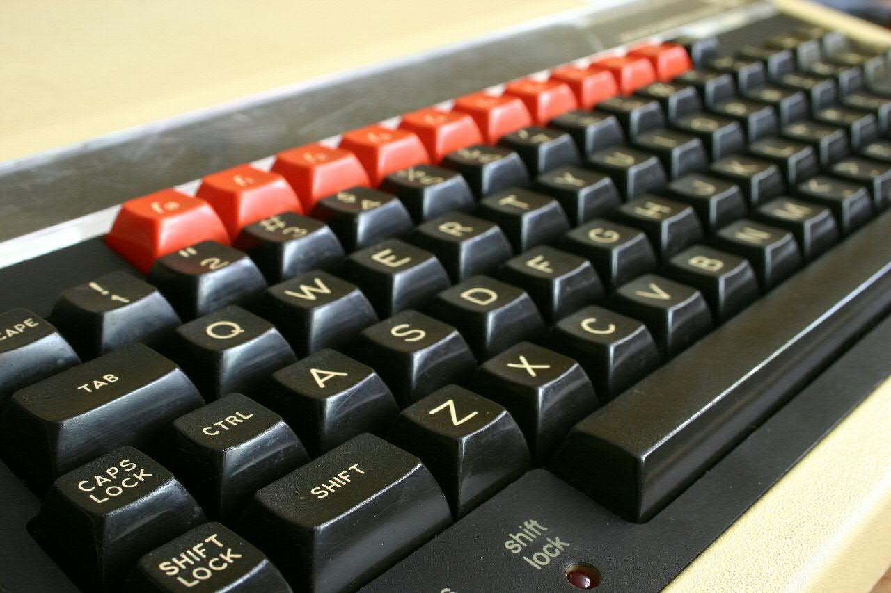
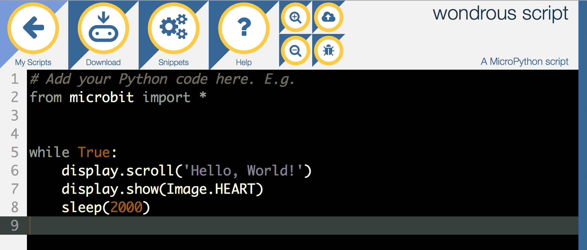
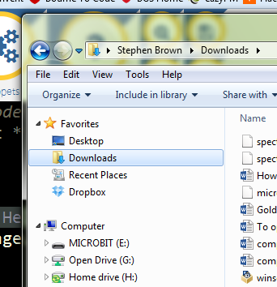
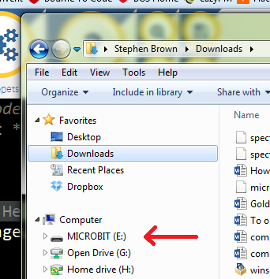

BBC Micro:bit
Bits and Pieces
Learn It
- Back in the early 1980s, the BBC launched a computer literacy project, working with a company called Acorn to produce a computer called the BBC Micro.

- (Image courtesy of Wikipedia)
- The machines were highly popular with schools, and were many people's first experience with computers. They could be programmed using a language called BASIC, and had different games and programs that could be run on them. You can read more about it here.
- Fast-forward 30 years or so, and the BBC have kindly produced the BBC Micro:bit - a computer you can carry, being given to every year 7 in the country to keep (you can take yours home once you've completed this topic).
Try It
- Let's write our very first program for the Micro:bit right now.
- Open the Micro:bit site, by opening this link in a new tab.
- https://www.microbit.co.uk/create-code
- Scroll down slightly, and click the link under the "Python" heading that says, "New project".
- Your screen should look something like this:

- Change the line 7 (they're numbered along the left-hand edge) to greet you by name rather than writing "Hello World".
- We can now put this program to our Micro:bit and see it work in the real World. Follow these instructions carefully:
- Gently plug the small end of the USB cable you've been given by your teacher into the socket on the Micro:bit. NOTE: The cable must go in the right way up; it does not need to be forced, otherwise it'll break.
- Plug the larger end of the USB cable into your PC. Again, this will only fit one way round.
- The Micro:bit will boot up, and a short demo sequence will start.
- Click the Download button in the top-left hand corner of the browser window. After a few moments, you'll see a dialogue box appear. Click Save File and it will disappear.
- Open My Computer or a file explorer window, and navigate to your Downloads folder…

- You'll see an enthusiastically named file with .hex written at the end of it in this folder (E.g. awesome program.hex). This is your program, ready to go onto the Micro:bit. Right-click on this file and choose 'cut'.
- Look down the different drive-letters in your explorer window, and find the one labelled MICROBIT. Click on this to open it.

- You'll see 3 files in here, with names like AUTORST.CFG and DETAILS.TXT which will let you know you're in the right place. Right-click in this folder, and choose Paste to place your program onto the Microbit. the yellow LED on the back of the unit will flicker while your program transfers, and after a few seconds, your program will run. You can repeat this process whenever you want to put a new program on the Micro:bit.
- This video tutorial walks you through it…
Learn It
- Let's think about what the program you've got running is actually doing for a second. Here is is again:
# Add your Python code here. E.g.
from microbit import *
while True:
display.scroll('Hello, World!')
display.show(Image.HEART)
sleep(2000)
- The first line starts with a # symbol. This tells MicroPython that this line is a comment written for humans to read. Any line you put a # at the start of will be ignored by the Micro:bit.
- The
from microbit...line is fetching some special code to allow our programs to control the buttons and LEDs on the Micro:bit. You'll always need this line at the start of the programs you write. - The
while Trueline starts something called a loop, which you'll have encountered before in scratch. We won't focus too much on this in our first lesson, but these are important in programming and we'll re-visit them later on. For now, its enough to know that any lines of code that come after it AND are indented (see how the next instructions are a few spaces away from the left margin?) will be repeated over and over forever. - The
display.scroll()line asks the Micro:bit to display whatever text is written in quotes inside the brackets on the LED display. display.show()makes images appear on the display. A heart is built into Micro:Python, as are rather a lot of others too.sleep()tells the Micro:bit to wait a number of milliseconds (there are 1000 in 1 second) before carrying out the next instruction.
Save It
- To save your code (so you can come back to it another day), you need to download it to your computer.
- Click "My Scripts" in the top-left corner of the coding window.
- Click the "Save" button on the right-hand side of the new page.
- Click "Save File" on the download window that appears.
- Locate the .jsz file that has been saved to your Downloads folder, and cut/paste it into your H: drive.
- To open a previously saved file in future, you can drag and drop .jsz files from your My Computer window onto the My Scripts page on the Micro:bit site.
- This video walks you through the process.
Badge It
- Silver: Write a program to do the following, and push it to your Micro:bit
- Display your first name,
- Wait 1 second,
- Display an image,
- Wait 1 second,
- Display "CompSci"
- Wait 1 second
- Take a screenshot of your code, and upload it to BourneToLearn for marking
- Gold: Read the documentation for DIY images, and draw a custom shape on the Micro:Bit. Upload a screenshot of your code for the teacher.
- Save your work in your H: drive using the technique above.